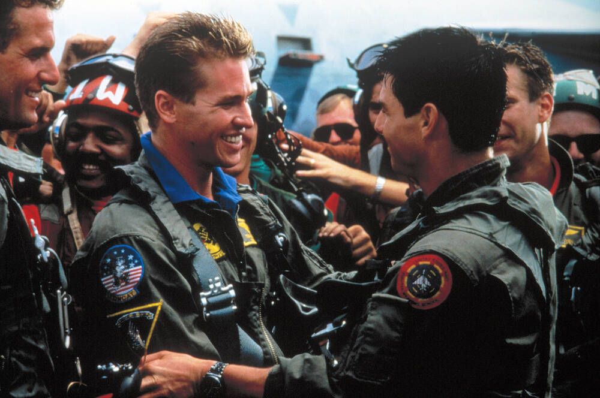
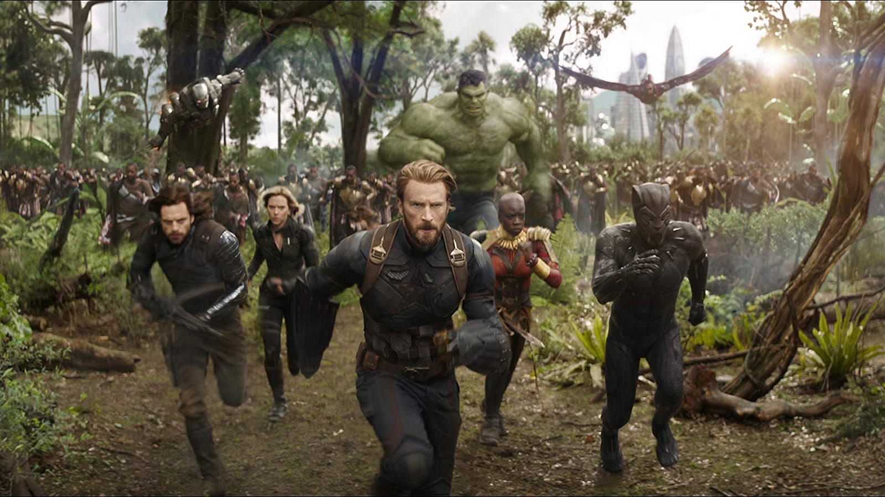

Top Gun

- Genre: Action / Drama
- Runtime: 1hr 50mins
- Rating:
Synopsis:
Top Gun (1986) is a PG-rated action-adventure starring
Tom Cruise as Maverick, a reckless but talented Navy pilot
attending an elite fighter school. The 109-minute film focuses on
intense aerial action, competition with rival Iceman, and a
romance with instructor Charlie. It is rated PG for intense action,
mild sexuality, and some thematic elements.
Harry Potter and the Sorcerer's Stone

- Genre: Fantsy Fiction
- Runtime: 2hr 32mins
- Rating:
Synopsis:
Harry Potter and the Sorcerer's Stone (or Philosopher's Stone) follows
orphaned Harry Potter, who discovers on his 11th birthday he's a
wizard and attends Hogwarts School, making friends Ron & Hermione,
learning about his past, and confronting the dark wizard Voldemort,
who tried to kill him as a baby, as they protect the magical
Sorcerer's Stone from falling into evil hands, ultimately thwarting
Voldemort's return.
The Advengers: Infinity Wars

- Genre: Action / Sci-fi
- Runtime: 2hr 29mins
- Rating:
Synopsis:
Avengers: Infinity War follows the Avengers, Guardians of the Galaxy,
and their allies as they unite to stop the tyrannical Thanos from
collecting all six Infinity Stones, powerful gems that control
reality, to wipe out half of all life in the universe, culminating
in Thanos's devastating success and the apparent disintegration of
countless heroes and civilians.
- Genre: Fantsy Fiction
- Runtime: 2hr 32mins
- Rating: